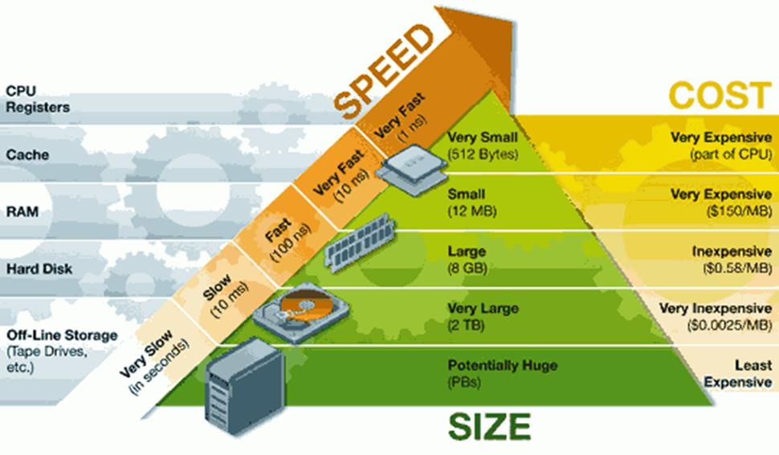

服务器硬盘
服务器硬盘
硬盘分为机械硬盘和固态硬盘
机械硬盘
机械硬盘结构
存储介质（Media）——盘片
盘片的基板是金属或玻璃材质制成，为达到高密度高稳定的质量，基板要求表面光滑平整，不可有任何暇疵。
读写头（Read Write Head）——磁头
磁头是硬盘读取数据的关键部件，它的主要作用就是将存储在硬盘盘片上的磁信息转化为电信号向外传输。
马达（ Spindle Motor & Voice Coil Motor ）
马达上装有一至多片盘片，以7200，10000，15000 RPM等定速旋转，为保持其平衡不可抖动，所以其质量要求严谨，不产生高温躁音。
硬盘基本参数
容量：容量是硬盘最主要的参数。单位有MB、GB、TB
转速：转速是指硬盘盘片每分钟转动的圈数，单位为rpm。现在硬盘的转速已经达到10000rpm，15000rpm
传输速率：传输速率(Data Transfer Rate) 。硬盘的数据传输率是指硬盘读写数据的速度，单位为兆字节每秒（MB/s）
缓存：硬盘缓存的目的是为了解决系统前后级读写速度不匹配的问题，以提高硬盘的读写速度
硬盘接口类型
IDE接口：硬盘接口规范，采用ATA技术规范
SCSI接口：应用于小型机上的高速数据传输技术
SATA接口： Serial ATA，提高传输速率，支持热插拔
SAS接口： Serial Attached SCSI，兼容SATA
目前主流的硬盘接口为SATA和SAS接口
固态硬盘
SSD(Solid State Disk)泛指使用NAND Flash组成的固态硬盘。其特别之处在于没有机械结构，以区块写入和抹除的方式作读写的功能，因此在读写的效率上，非常依赖读写技术上的设计SSD读写存取速度快，性能稳定，防震性高，发热低，耐低温，电耗低，无噪音。因为没有机械部分，所以长时间使用也出现故障几率也较小。
缺点：价格高，容量小，在普通硬盘前毫无性价比优势
服务器的性能短板
如果CPU有每秒处理1000个服务请求的能力，各种总线的负载能力能达到500个， 但网卡只能接受200个请求，而硬盘只能负担150个的话，那这台服务器得处理能力只能是150个请求/秒，有85%的处理器计算能力浪费了。在计算机系统当中，硬盘的读写速率已经成为影响系统性能进一步提高的瓶颈。
各硬件的处理速度
